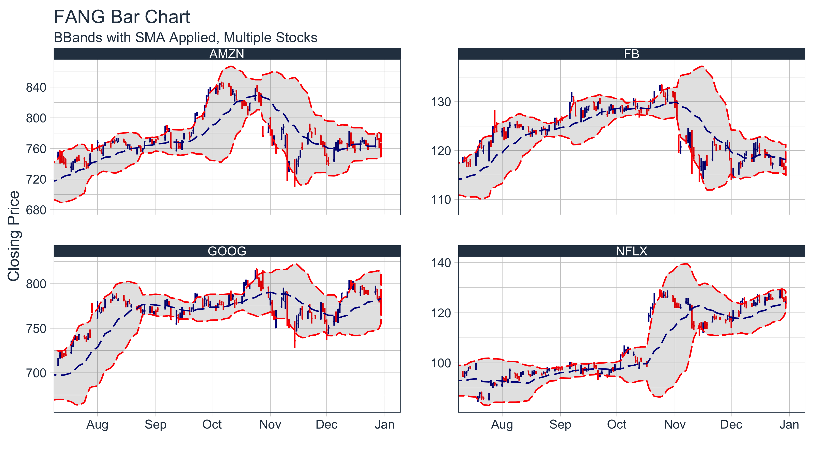

Bringing financial analysis to the tidyverse
tidyquant integrates the best resources for collecting and analyzing financial data, xts and zoo, quantmod, TTR, and PerformanceAnalytics with the tidy data infrastructure of the tidyverse allowing for seamless interaction between each.
The four primary quantitative packages that are the backbone for financial analysis in R programming are:
zoo, which is also integrated.The tidy data principles are a cornerstone of data management and the data modeling workflow. The foundation for tidy data management is the tidyverse, a collection of R packages: ggplot2, dplyr, tidyr, purrr, readr, tibble, that work in harmony, are built for scaleability, and are well documented in R for Data Science. Using this infrastructure and the core tidy concepts, we can apply the tidy data principles to financial analysis using the R package, tidyquant.
zoo, xts, quantmod, TTR, and PerformanceAnalytics
tidyverse tools in R for Data Science
ggplot2 functionality for beautiful and meaningful financial visualizationsMinimizing the number of functions reduces the learning curve. What we’ve done is group the core functions into four categories:
Get a Stock Index, tq_index(), or a Stock Exchange, tq_exchange(): Returns the stock symbols and various attributes for every stock in an index or exchange. Eighteen indexes and three exchanges are available.
Get Quantitative Data, tq_get(): A one-stop shop to get data from various web-sources.
Transmute, tq_transmute(), and Mutate, tq_mutate(), Quantitative Data: Perform and scale financial calculations completely within the tidyverse. These workhorse functions integrate the xts, zoo, quantmod, TTR, and PerformanceAnalytics packages.
Performance analysis, tq_performance(), and portfolio aggregation, tq_portfolio(): The PerformanceAnalytics integration enables analyzing performance of assets and portfolios. Refer to Performance Analysis with tidyquant.
For more information, refer to the first topic-specific vignette, Core Functions in tidyquant.
There’s a wide range of useful quantitative analysis functions (QAF) that work with time-series objects. The problem is that many of these wonderful functions don’t work with data frames or the tidyverse workflow. That is until now. The tidyquant package integrates the most useful functions from the xts, zoo, quantmod, TTR, and PerformanceAnalytics packages, enabling seamless usage within the tidyverse workflow.
Refer below for information on the performance analysis and portfolio attribution with the PerformanceAnalytics integration.
For more information, refer to the second topic-specific vignette, R Quantitative Analysis Package Integrations in tidyquant.
The greatest benefit to tidyquant is the ability to easily model and scale your financial analysis. Scaling is the process of creating an analysis for one security and then extending it to multiple groups. This idea of scaling is incredibly useful to financial analysts because typically one wants to compare many securities to make informed decisions. Fortunately, the tidyquant package integrates with the tidyverse making scaling super simple!
All tidyquant functions return data in the tibble (tidy data frame) format, which allows for interaction within the tidyverse. This means we can:
%>%) for chaining operationsdplyr and tidyr: select, filter, group_by, nest/unnest, spread/gather, etcpurrr: mapping functions with map
For more information, refer to the third topic-specific vignette, Scaling and Modeling with tidyquant.
The tidyquant package includes charting tools to assist users in developing quick visualizations in ggplot2 using the grammar of graphics format and workflow.

For more information, refer to the fourth topic-specific vignette, Charting with tidyquant.
Asset and portfolio performance analysis is a deep field with a wide range of theories and methods for analyzing risk versus reward. The PerformanceAnalytics package consolidates many of the most widely used performance metrics as functions that can be applied to stock or portfolio returns. tidquant implements the functionality with two primary functions:
tq_performance implements the performance analysis functions in a tidy way, enabling scaling analysis using the split, apply, combine framework.tq_portfolio provides a useful toolset for aggregating a group of individual asset returns into one or many portfolios.Performance is based on the statistical properties of returns, and as a result both functions use returns as opposed to stock prices.
For more information, refer to the fifth topic-specific vignette, Performance Analysis with tidyquant.